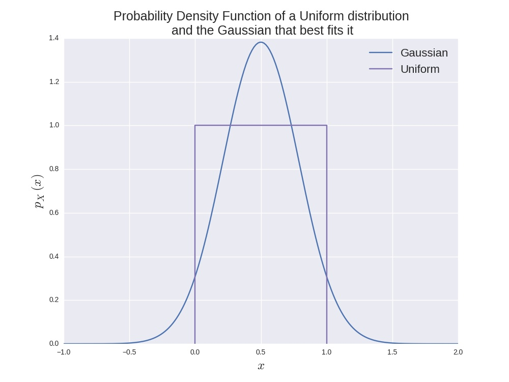

Before introducing and explaining density estimation, I would like to
focus a bit on supervised learning because I will use it to explain the
difference between it and unsupervised methods like density estimation.
Supervised Learning
In supervised learning, the general setup is that we have some data in
some \(D\) dimensional space e.g. \(x \in \mathbb{R}^D\) and we want to
make a model that can make predictions for some target variable
\(y \in \mathbb{R}^M\), where \(M << D\) typically.
We call it supervised learning when our data set consists, both of the
inputs and of the outputs i.e. we have some dataset
\(\mathcal{D} = \{(x^{(n)}, y^{(n)})\}_{n=1}^N\), where \(N\) is the
number of data points in our data set.
One way to do supervised learning
is to model \(p(y|x, \theta)\) with some parametric model that takes as
parameters \(\theta\) and then to fit the parameters of the model to
minimise a cost function.
Both Maximum likelihood (ML) and Maximum a posteriori (MAP)
estimation can be formulated in this way.
Let us illustrate this by deriving the cost function for ML for some
general supervised learning task. Again, we suppose we have the dataset
\(\mathcal{D}\) defined above. We assume that each point has been drawn
from the identical distribution that every other point has been sampled
from but independently from any other data point (known as i.i.d.). In
ML learning, we seek to maximise the likelihood of the data. That is,
the probability of the data given the parameters or
\(p(\mathcal{D}|\theta)\). Because the data is i.i.d. we can write this
as
$$
\begin{align}
p(\mathcal{D}|\theta)
&= \prod_{n=1}^N p(x^{(n)}, y^{(n)}|\theta)\\
&= \prod_{n=1}^N p(y^{(n)}|x^{(n)}, \theta) p(x^{(n)}|\theta).
\end{align}
$$
Now since we only care about modelling \(p(y^{(n)}|x^{(n)}, \theta)\),
we don't really need to care about modelling \(p(x^{(n)}|\theta)\) i.e.
we don't care how the input data is distributed, we only care about
how the output data is distributed given the input data.
Therefore, we can say that \(p(x^{(n)}|\theta) = p(x^{(n)})\). This means
that
$$
\begin{align}
p(\mathcal{D}|\theta) &\propto \prod_{n=1}^N p(y^{(n)}|x^{(n)}, \theta)
= l(\theta).
\end{align}
$$
This is equivalent to maximising the log probability because log is a
strictly monotonically increasing function, so the parameters that
maximise the log of the likelihood, are also the parameters that
maximise the likelihood. So, by taking logs we get
$$
\begin{align}
L(\theta) &= \sum_{n=1}^N \log p(y^{(n)}|x^{(n)}, \theta)
\end{align}
$$
and by making different modelling assumptions for the parametric family
of distributions that \(p(y^{(n)}|x^{(n)}, \theta)\) is modelled by, we get
different well known supervised models (e.g. logistic regression,
linear regression, neural networks, etc.).
Density Estimation
In unsupervised learning, we generally do not have a split in the data
into some \((x^{(n)}, y^{(n)})\), so we care about modelling the data set
as a whole. We look for interesting patterns in the data or seek to
find models that explain the data well and are interpretable. Density
estimation is an unsupervised learning task, in which the goal is to
model the probability density (or distribution for discrete data) over
our input i.e. \(p(x)\) for some \(x \in
\mathbb{R}^D\).
So, that's pretty straight forward, right?
No, actually, this can be a really difficult task, especially when
\(D\) is large, because of the curse of dimensionality. The
curse of dimensionality basically states that as the dimensionality of
the space increases, the amount of data needed to get a good idea of
how the data is distributed in the space grows exponentially, which is
really sad because, though we are in the big data era, for most
data sets of interest (images, audio, etc.) the sizes of the datasets
are still too small to accurately get a accurate models for their
densities.
Another reason this can be tough is because each parametric model that
is chosen to model a probability density has its own inductive
bias. The inductive bias of a model is the set of assumptions the
model inherently makes, which make it hard for it to model data that
does not satisfy these assumptions.
For example, imagine trying
to model a uniform distribution with a Gaussian. This would always
be a bad fit. For one, the Gaussian has
an infinite support (the interval in which the density is
non-zero), whereas the uniform distribution has a finite support. Also,
the Gaussian has a single mode and decays square-exponentially away
from it, whereas the uniform distribution takes two distinct values:
0 and 1. The image below illustrates this. The Gaussian was fit by
minimising the KL divergence (I'll probably do another post on this at
some point) and by clicking on the button below you can see how this
is done.
So, to model arbitrary data, we need to have
models that are flexible enough so as to not make very stringent
assumptions. One common assumption made by many models is that the
density is smooth everywhere i.e. the gradient at any point
has some maximum magnitude. This is not always true (the uniform
distribution is again an example where this is not the case, as the
gradient at 0 and 1 does not even exist), but we
seem to believe that it is the case for many densities.
To derive the best fit Gaussian to a Uniform distribution, we can
minimise the KL divergence between the two distributions. Let \(p\) be
the probability density function of the uniform distribution and \(q\)
be the probability density function of the Gaussian. Then we have
$$
\begin{align}
\text{KL}(p || q) &= \int p(x) \log \frac{p(x)}{q(x)} dx
\\
&= \int_{0}^{1} \log \frac{1}{q(x)} dx
\\
&= \int_{0}^{1} \frac{1}{2} \log 2\pi \sigma^2 dx +
\int_{0}^{1} \frac{1}{2\sigma^2} (x - \mu)^2dx
\\
&= \frac{1}{2} \log 2\pi \sigma^2 +
\frac{1}{2\sigma^2} \int_{0}^{1} x^2 - 2\mu x + \mu^2 dx
\\
&= \frac{1}{2} \log 2\pi \sigma^2 +
\frac{1}{2\sigma^2} \left[\frac{x}{3} - \mu x^2 -\mu^2 x \right]\Big|_0^1
\\
&= \frac{1}{2} \log 2\pi \sigma^2 +
\frac{1}{2\sigma^2} \left[\frac{1}{3} - \mu -\mu^2 \right].
\end{align}
$$
Now, if we want to minimise this KL divergence, we just take the
derivative with respect to the parameters (\(\mu, \sigma^2\)) and set
them to zero to get a couple of equations and solve for the parameters,
as such
$$
\begin{align}
\frac{\partial \text{KL}(p || q)}{\partial \mu} &= -1 + 2\mu_* = 0,\\
\frac{\partial \text{KL}(p || q)}{\partial \sigma^2} &=
\frac{1}{2\sigma^{2}_*} - \frac{1}{2(\sigma^{2}_*)^2}\frac{1}{12} = 0.
\end{align}
$$
Solving for the parameters, we get that \(\mu_* = \frac{1}{2}\) and
\(\sigma^2_* = \frac{1}{12}\) i.e. the mean is equal to the mean of the
uniform and the variance is equal to the variance of the uniform. No
surprise there.

It is also required that the
model gives a valid density i.e. it must integrate to one and it must
be non-negative everywhere. This means that models like the Restricted
Boltzman Machine (RBM) and other undirected graphical models are not
easy to use because the partition function needs to be
calculated. In a lot of cases, this is just intractable.
What's at our disposal?
Well there are a bunch of models out there that are used, with varying
success. Probably the most familiar (after a regular Gaussian)
is the Mixture of Gaussians (MoGs). This model is exactly what its name
suggests (trust me, in machine learning, that is not always the case).
It's pdf is parameterised as such \(\theta = \{\pi_k, \mu_k, \Sigma_k \
|\ \forall k \in [K]\}\). Here \(K\) is the number of
mixing components (i.e. the number of Gaussians), \(\pi_k\) is the
probability of a data point coming from the \(k\)th Gaussian and
\(\mu_k, \ \Sigma_k\) are the associated mean vectors and covariance
matrices respectively. This model is simple enough, but it is also quite
powerful (for modelling continuous data) in many cases. It is usually
fit using the Expectation Maximisation (EM) algorithm (which I will
go through in another post hopefully).
Other models include Mixture of Factor Analysers (MoFAs), Mixture of
Bernoullis (MoBs) which are for multivariate binary data and more recent
models like the Neural Autoregressive Distribution Estimator
(NADE) and its variants (which my supervisor Iain Murray
was involved in developing). There are actually plenty of models
out there, and the purpose of this post is not to list them all
(because that would be incredibly boring for me, and I want to keep this
infomative, yet fun for me as well). If you are interested in knowing
more about the models that are available, you can send me an email and
I'll send you some papers to read.
The cost function?
So, when we are fitting these models, what we actually want to do is to
minimise some cost. A cost that usually comes to mind (both because it
makes sense and because it is quite nice to work with), is the KL
divergence (again, a post on this will come soon, hopefully). In this
case, KL\((p || q)\), where \(q\) is the density that our model gives
and \(p\) is the actual density function of the distribution
that produced the data.